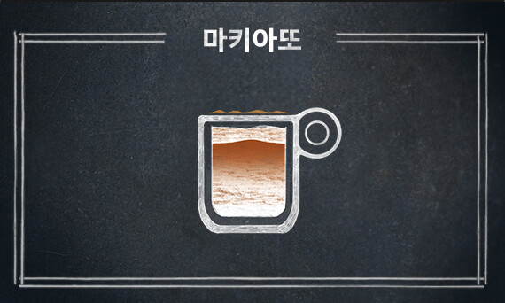
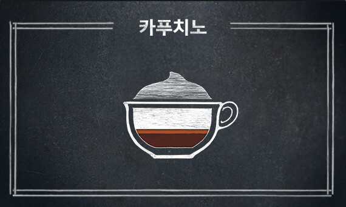

Doppio is a double shot, extracted using a double coffee filter in the portafilter. This results in 60ml of drink, double the amount of a single shot espresso. More commonly called a standard double, it is a standard in judging the espresso quality in barista competitions. but only because four single espresso are made using two double portafilters. Doppio is Italian multiplier, meaning "double" but a doppio espresso doesn't exist in Italy.
A single shot of espresso, by contrast, is called a solo ("single") and developed because it was the maximum amount that could practically be extracted on lever espresso machines. Today the Doppio is the standard shot, and because solos require a different filter basket, solo shots are often produced by making ("pulling") a doppio in a two-spout portafilter, but only catching one of the streams (the other stream may be discarded or used in another drink).
There are also Ristretto and Lungo in addition to Doppio and Espresso. Ristretto means short, concentrated, and has a distinct sour taste. Lungo means long, and its bitter taste stands out.

Americano is an extremely popular type of coffee yet most people know nothing about where it came from. The story goes that when American soldiers were stationed in Italy during WWII, they balked at the strong flavor of the espresso drunk by the natives.
Raised on drip coffee, the full-bodied and rich flavors of an espresso were unfamiliar. So, they hit on the idea of adding more water to a shot of espresso, and the famous black drink was born. This was explained by the New York Times.
Legend has it that when soldiers in Italy encountered espresso, they watered it down to make a concoction similar to the coffee they drank at home. By the way, Italians aren’t that keen on drinking coffee in any other way besides espresso (they call diluted espressos ‘dirty water’). An espresso (meaning ‘quick’) is made by forcing water at high pressure through finely ground coffee. It creates a small amount of richly flavored coffee. Perhaps the most characteristic element of espresso is the crema.

Caffe latte (or simply latte) is a coffee drink made with espresso and steamed milk. The word comes from the Italian caffè e latte, caffelatte or caffellatte, which means "coffee & milk". The word is also sometimes spelled latté or lattè in English with different kinds of accent marks, which can be a hyperforeignism or a deliberate attempt to indicate that the word is not pronounced according to the rules of English orthography.
In northern Europe and Scandinavia, the term café au lait has traditionally been used for the combination of espresso and milk. In France, café latte is mostly known from the original Italian name of the drink (caffè latte or caffelatte); a combination of espresso and steamed milk equivalent to a "latte" is in French called grand crème and in German Milchkaffee or (in Austria) Wiener Melange.
Variants include the chocolate-flavored mocha or replacing the coffee with another drink base such as masala chai (spiced Indian tea), mate, matcha, turmeric or rooibos; other types of milk, such as soy milk or almond milk, are also used.

A Macchiato is an espresso with dash of steamed milk. When the milk is added to the dark colored espresso, it makes a “stain” or “mark” from which it gets it name.
The small amount of milk added is enough to brighten the dark color of the coffee. If you prefer a little creaminess in your coffee, then a macchiato is the perfect alternative to the normal espresso.
Although the macchiato is originally from Italy, it is now available almost all over the world, thanks to the large amount of coffee shops, both chains and independent cafe’s alike, that help promote this now, popular coffee drink. Depending on where in the world and what you order, there are slightly different varieties on how this drink is made.
For example, It is common to order a long macchiato in Australia, which is a double shot of espresso and a splash of milk served in a tall glass. That said, a traditional macchiato, that most coffee shops serve in the Canada, the US, and European countries are what I have described above, although some coffee shops offer the “exotic” version such as caramel macchiatos and latte macchiatos in addition to the “standard”.

Cappuccino is an espresso-based coffee drink that originated in Italy, and is traditionally prepared with steamed milk foam (microfoam). Variations of the drink involve the use of cream instead of milk, and flavoring with cinnamon or chocolate powder. It is typically smaller in volume than a caffe latte, with a thicker layer of microfoam.
The name comes from the Capuchin friars, referring to the colour of their habits, and in this context referring to the colour of the beverage when milk is added in small portion to dark, brewed coffee (today mostly espresso). The physical appearance of a modern cappuccino with espresso créma and steamed milk is a result of a long evolution of the drink.
The Viennese bestowed the name "Kapuziner", possibly in the 18th century, on a version that included whipped cream and spices of unknown origin. The Italian cappuccino was unknown outside Italy until the 1930s, and seems to be born out of Viennese-style cafés in Trieste and other cities in the former Austria in the first decades of the 20th century. The drink has since spread worldwide and can be found at a number of establishments.

Mocha is another espresso based drink and another name for “mocaccino,” “mochaccino,” or “mochachino.” Unlike other espresso based drinks such as the latte, macchiato, and cappuccino, the exact origins of the cafe mocha is unknown.
It is believed that the drink was originally named after the “mocha bean,” which is a type of coffee bean shipped from the port of Al Mokka in Yemen. These beans are now known as Arabica beans. These days, the name “mocha” doesn’t reference these specific coffee beans but rather indicating the presence of chocolate flavorings in the coffee.
A cafe mocha is essentially a chocolate flavored variant of a cafe latte, or even a hot chocolate with shots of espresso in it. It is made up of espresso, milk, and chocolate. It can include one or two shots of espresso depending on taste preferences and traditionally is topped with milk foam, just like a latte. Unlike other coffee drinks, the mocha is a lot sweeter in taste and can be great for those who have a sweet tooth or enjoy a good dose of sugar.
It is a very customizable drink in as many types of chocolate can be used. Depending on the place, a mocha can have chocolate syrup, dark chocolate, milk chocolate, or even white chocolate. Toppings can also be customizable with some people replacing the milk foam on top with whipped cream. Some mochas can also have chocolate shavings or cinnamon added on top for extra decoration and taste. Yum!